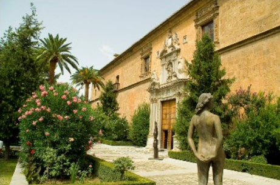

Sobre la Universidad de Granada
La Universidad de Granada fue fundada en 1531, siendo continuadora de una larga tradición docente que enlaza con la Madraza del último Reino Nazarí. En Granada hay cuatro campus universitarios, además del "Campus del Centro", en el que se integran todos los centros dispersos por el casco histórico de la ciudad. Hay otros dos campus de la UGR en las ciudades de Ceuta y Melilla, en el norte de África.
La Universidad en cifras

Aquí podrá consultar datos sobre la gestión económica, titulaciones y personal.
- Memoria de gestión económica
- Estadísticas académicas
- Datos sobre el personal
El entorno de la Universidad

En la UGR estudian más de 60.000 alumnos de grado y posgrado y otros 10.000 realizan cursos complementarios, de idiomas, de verano, etc. La ciudad de Granada ofrece, multitud de actividades de ocio, culturales, etc.
- Información de servicios
- Tour de Campus
- Agenda cultural
- Actividades deportivas
- Ocio